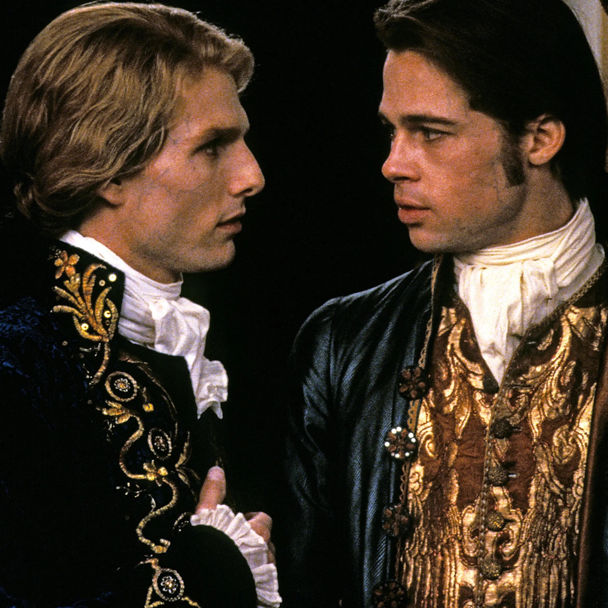

About Louis de Pointe du Lac
Louis is the main character in the movie, Interview with the Vampire.
Louis is running a plantation when he meets the vampire Lestat who befriends and eventually turns him.
Louis and Lestat
Louis' Characteristics
- very handsome
- conflicted
- empathetic
- vengeful